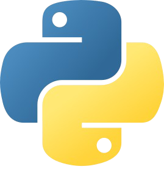

東京情報大学 総合情報学部 総合情報学科 情報メディア学系 2年
五賀健太
UI/UXデザインと情報処理への理解が深い学生として、
フロントエンドエンジニアを目指す
経緯 － 点と点の繋がり
-
2022〜2023

高校1年次から情報処理を学び始め、情報技術に魅力を感じていましたが、同時に物足りなさも感じていました。
-
2024

高校3年次にHTMLとCSSを学習し、自分が視覚的なインパクトを求めていることに気づき、WebデザインやUIデザインに興味を持つきっかけになりました。
-
2025

大学1年次に読んだ1冊の本からは、デザインが「見た目を設計することに限定された活動ではなく、人が目的を達成するための体験を全体的に設計する活動」であることを知り、UX向上の重要性を強く意識するようになりました。
-
2026
これまでの経験が繋がり、現在はUI/UXデザインと情報処理への理解を深め、フロントエンドエンジニアとして活躍することを目指しています。
価値観 － 徹底徹尾やり抜く
何事にも徹底徹尾やり抜く姿勢を大切にしています。フロントエンドエンジニアを目指すにあたって必要な基礎を築くため、計画的な学習を行っています。作品制作では細部にまで徹底的にこだわり、自分が本当に納得できるクオリティになるまで手を抜かずに取り組んでいます。また、学校の授業においても真摯に向き合っています。自分の進路には一見関係ないと思われる授業でも「人生の中で必ず役に立つ瞬間がある」と考えているため、授業からはできるだけ多くのことを吸収できるように日々努力しています。結果として、大学における2026年度の学業優秀特待生に選出されました。
こうした学習には多くの時間を要するため、食事や睡眠などの生活習慣も徹底的に最適化し、休日のほとんどを学習に当てることで、学習時間を最大化できるように努めています。
スキル
高校時代から取り組んできた情報処理の学習に加え、現在はメディアデザインの学習にも取り組んでいます。コンピュータスキルに関しては、ブラインドタッチや基本的なショートカットキーの操作が可能です。
現段階で使用経験のあるツールは以下の通りです。
- GitHub
 HTML
HTML CSS
CSS Figma
Figma Blender
Blender- GIMP
- Word
- Excel
- PowerPoint

Python
資格
-
全国商業高等学校協会主催 情報処理検定試験 ビジネス情報部門 1級/2023年
-
ITパスポート試験/2024年
- 全国商業高等学校協会主催 ビジネス文書実務検定 1級/2024年
-
全国商業高等学校協会主催 情報処理検定試験 プログラミング部門 1級/2024年
-
基本情報施術者試験/2025年
-
 JDLA Deep Learning for GENERAL (G検定)/2026年
JDLA Deep Learning for GENERAL (G検定)/2026年
-
UX検定™基礎/2026年
高校時代から資格試験を活用し、モチベーションを維持しながら学習を継続しています。
目指す姿 － 人にやさしいデジタル社会を実現
大学卒業後は、UI/UXデザインと情報処理のスキルを活かし、UI/UXへの理解が深いフロントエンドエンジニアとして、人にやさしいデジタル社会の実現に貢献したいと考えています。現代は情報技術によって生活が豊かになる一方で、ユーザーを迷わせてしまうWebサイトやアプリケーションも多く存在していると感じます。しかし、ユーザーはその問題を解決する能力を持っていないため、不満を感じていたとしても諦めて使い続けるしかないことが多いと考えられます。
私はこうした課題に寄り添ったデザインを、技術で具体化することにより「人が苦痛を感じるデジタル社会」を「人にやさしいデジタル社会」に変えられるフロントエンドエンジニアとして、活躍することを目指します。
日常
-
一人暮らし
千葉県の大学に通うため、地元を離れて一人暮らしをしています。当初は初めての経験で戸惑うことも多々ありましたが、現在は炊事や洗濯、買い物などを自然にこなせるようになり、成長を感じています。
-
節約
学習時間を確保するため、アルバイトはしていません。仕送りと奨学金のみで生計を立てるため、徹底的に節約することを心掛けています。
-
ラジオ
勉強や作品制作、家事をしながら、毎日ラジオを聴いています。主にTOKYO FMを聴きます。
-
食事
お金と時間を節約するため、毎日の自炊ではパスタしか作りません。しかし、週末は普段よりも少し良い食事もしたいという感情があるため、外食でパスタ以外の料理を食べます。